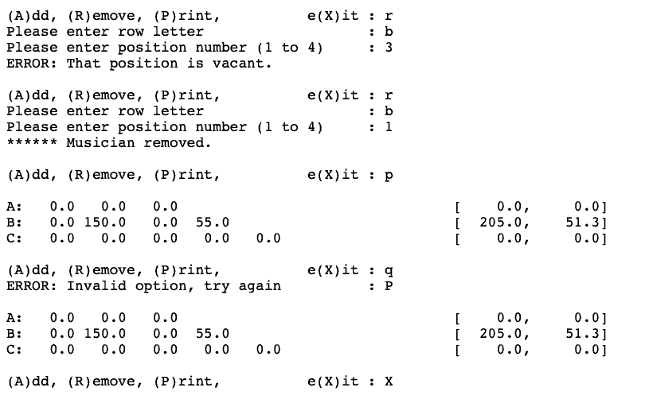

A program which organizes where musicians will stand on bleachers at away games. Since each stadium is different,it allows input of the number of rows that they have to stand on, with a maximum of 10, and the number of positions per row. The maximum number of positions is 8 and positions are numbered with integers while rows are labelled with capital letters.
The conductor can assign people to positions, but is constrained by weight limits: Musicians, fully clothed and holding their instruments, weigh from 45kg to 200kg, and the total weight of a row may not exceed 100kg per position (e.g., a row with 5 positions may not have more than 500kg of musicians on it). The program allows musicians to be added and removed from positions, while ensuring the constraints are all met. At any stage the current assignment can be displayed - the weight in each position (0kg for vacant positions) and the total & average weight for each row.
The program is menu driven with options to:
- Add a musician (by weight) to a vacant position.
- Remove a musician from an occupied position.
- Print the current assignment.
- Exit

Using objects, this program simulates the growth and pruning of forests. Each forest has a name and exactly 10 trees. The trees are planted when they are 1' to 5' tall, and each tree has a individual growth rate of 50%-100% per year. For the simulation new trees are constructed randomly within these bounds. A forest is reaped (by lumberjacks) on demand - all trees above a specifed height are cut down and replaced with new trees.
The user interface to the simulation allows the user to:
- Display the current forest (with tree heights to 2 decimal places).
- Discard the current forest and create a new forest.
- Simulate a year's growth in the current forest.
- Reap the current forest of trees over a user specified height, replacing the reaped trees with random new trees.
- Save the information from the current forest to file (named after the forest)
- Discard the current forest adn load the information about a forest from a file.
This program creates a girl object and repeatedly displays information about the girl and her diamond (another object), if she has one. It also allows the user to input the number of carats and the value of the next diamond. If the offer is more than 0 carats, it creates a diamond object and offers it to the girl (she accepts only if it is more valuable than her current diamond), until a diamond of 0 carats is specified.
This program reads a sentence and checks to see if the sentence starts with "I am", if it does, the substring after that is extracted containing the quality the person believes they possess. The substring is then concatenated into a growing string containing all such qualities.